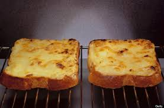

Cheese on Toast
List of ingredients :
- Cheese
- Bread
… and this is how you work the magic.
- Toast slice of bread.
- Place cheese on top.
- Grill until cheese begins to brown.
- Enjoy.
… and this is how you work the magic.
… and this is how you work the magic.
… and this is how you work the magic.